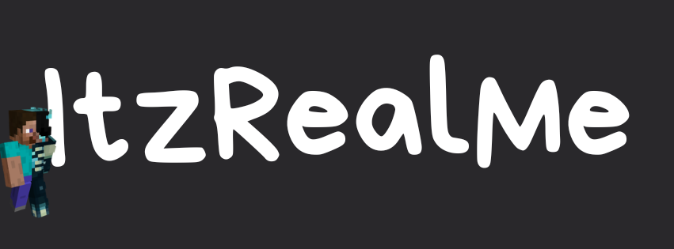

ItzRealMe es un reconocido jugador de Minecraft, famoso por su habilidad en PvP y su presencia en la comunidad de streaming.
ItzRealMe, también conocido como Itz, es considerado uno de los mejores jugadores de PvP en Minecraft, destacando en modalidades como crystal PvP, sword PvP y potions www.youtube.com. Su estilo de juego se caracteriza por ser dominante y estratégico, lo que le ha ganado reconocimiento dentro de la comunidad competitiva de Minecraft . Además, ha participado en servidores SMP y ha sido comparado con otros jugadores destacados como ClawPierce
Presencia en plataformas
ItzRealMe transmite en Twitch, donde comparte partidas en directo y mantiene una comunidad activa de seguidores www.twitch.tv. También tiene un perfil en NameMC, donde se pueden consultar sus skins, historial de nombres y UUID dentro del juego es.namemc.com.
Apariciones en contenido narrativo
Más allá del juego competitivo, ItzRealMe aparece como personaje en la serie Unstable Universe, donde inicialmente es antagonista y luego deuteragonista en episodios relacionados con PvP y misiones dentro del universo de Minecraft unstable-universe-mc.fandom.com. En esta narrativa, se le describe como estoico, inteligente y enfocado, con un carácter frío que refleja su estilo calculador y estratégico.